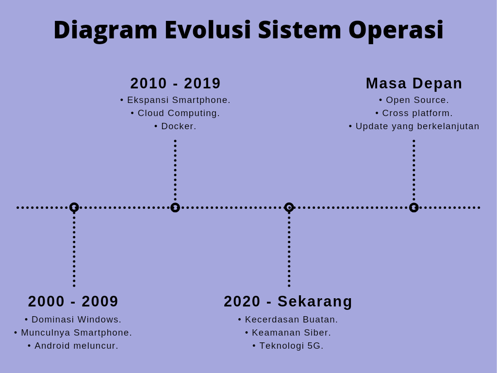

Evolusi Sistem Operasi (pasca 2000)
Evolusi sistem operasi sangat cepat dan kompleks, sehingga sulit untuk memberikan rincian per tahun yang sangat spesifik. Namun, kita dapat mengidentifikasi beberapa tren utama dan peristiwa penting yang menandai setiap dekade setelah tahun 2000. Berikut diagram sederhana evolusi sistem operasi.

Tahun 2000-an: Dominasi Desktop dan Munculnya Mobile.
1. Dominasi Windows.
Windows 2000 diluncurkan oleh Microsoft pada tahun 2000. Kemudian Windows XP, Windows Vista, dan Windows 7 dirilis pada rentang waktu ini.
2. Munculnya Smartphone.Ditandai dengan dominasi Android dan iOS sehingga menjadikan smartphone mendominasi. Ditandai juga oleh raksasa desktop, Windows yang merilis Windows phone. Tetapi sayangnya Windows phone tidak dapat bersaing dengan Android dan iOS sehingga gagal.
3. Android Meluncur.Pada tahun 2007 Android diumumkan oleh Google, memulai era dominasi sistem operasi mobile berbasis Linux.
Tahun 2010-an: Era Mobile dan Cloud Computing.
1. Ekspansi Smartphone.
Smartphone semakin merajalela ditandai dengan suksenya duo raksasa Android dan iOS.
2. Cloud Computing.Cloud computing memungkinkan pengguna untuk mengakses komputer secara online tanpa adanya infrastruktur komputer yang sebenarnya. Ditandai oleh dirilisnya Windows Azure (sekarang Microsoft Azure) pada tahun 2011 yang berkembang menjadi platform cloud yang kuat.
3. Docker.Pada tahun 2013 Docker diluncurkan, memperkenalkan teknologi container yang memudahkan pengembangan dan deployment aplikasi di berbagai lingkungan.
Tahun 2020-an: Kecerdasan Buatan, IoT, dan Keamanan Siber.
1. Kecerdasan Buatan.
Kecerdasan Buatan atau Artificial Intelligence mulai berkembang dengan sangat pesat. Ditandai dengan munculnya AI gratis seperti chatgpt, gemini, copilot, dll.
2. Keamanan Siber. Peningkatan keamanan siber sangat penting di era digital karena meningkatnya ancaman terhadap privasi dan keamanan informasi. Langkah preventif seperti implementasi enkripsi, firewall kuat, dan kebijakan akses ketat diperlukan untuk melindungi data sensitif dari serangan cyber. 3. Teknologi 5G.Munculnya teknologi 5G sebagai penerus 3G dan 4G berdampak pada kebutuhan sistem operasi untuk mendukung aplikasi real time dan latensi rendah.
Tren yang Berkelanjutan:
1. Open Source.
Open source akan semakin marak di masa depan. Dengan adanya inovasi teknologi pada tahun-tahun sebelumnya, maka bukan tidak mungkin jika akan semakin banyak proyek dan kontribusi yang muncul dari berbagai belahan dunia. Kolaborasi antar pengembang dan komunitas akan menjadi lebih mudah dan produktif,
2. Cross-Platform.Cross platform sangat penting dalam pengembangan perangkat lunak modern. Pengguna mengharapkan aplikasi yang berjalan lancar di berbagai sistem operasi seperti Windows, macOS, dan Linux. Ini mendorong pengembang untuk menggunakan pendekatan dan alat yang mendukung kompatibilitas lintas platform.
3. Update yang berkelanjutanAplikasi dan teknologi akan selalu mendapatkan pembaruan, seperti peluncuran Android 15 tahun ini. Pembaruan tidak hanya memperbaiki bug, tetapi juga menghadirkan fitur inovatif yang meningkatkan pengalaman pengguna. Perkembangan teknologi seperti kecerdasan buatan (AI), Internet of Things (IoT), dan realitas virtual (VR) terus mendorong batasan kemampuan teknologi.